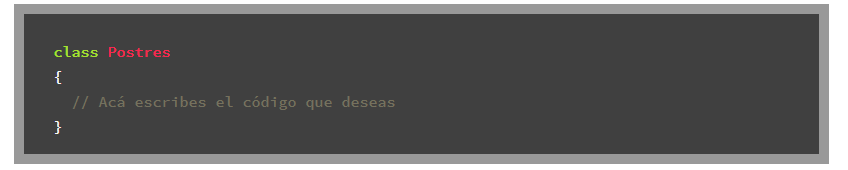
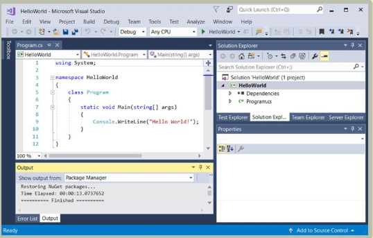

Dentro de las tecnologías más innovadoras, dinámicas y otras características que hacen de un Lenguaje de Programación muy importante se encuentra Microsoft C#, este lenguaje se encuentra en la actualidad hasta la fecha de este artículo, como uno de los Lenguajes de Programación usados para grandes proyectos, en este artículo te contaremos todos los detalles.
Que es C# ?
Es un Lenguaje de Programación para crear aplicaciones de escritorio robustas y para integrarlo con otras tecnologías, entornos de desarrollo y lenguajes de programación, la forma como se pronuncia es C Sharp (C#) y es quizás C# es muy popular
porque es utilizado de la mano con otras tecnologías o Lenguajes de Programación para integrar aplicaciones dinámicas, por ejemplo con C# puedes crear una interface para Windows como un reproductor de música, este reproductor lo puedes integrar
con un servidor en la nube y en este servidor puede estar desplegada una API REST desarrollada con Node JS y Redist DB y poder acceder a las rutas para login, registro, listas de musicas, etc. Todas estas rutas son consumidas por la interface
desarrollada con C#.
La Sintaxis de C# esta basada en otro Lenguaje de Programación que es C ++ el cual trabaja por medio de modelos de objetos y el uso de Clases, por ejemplo podemos crear una clase llamada Postres

Como utilizar C# ?
Lo ideal para trabajar con C Sharp es utilizar el programa Microsoft Visual Studio de la misma empresa Microsoft dueña del Lenguaje C#, ya que soporta la carga y trabajo con su mismo lenguaje, no hay nada mejor que usar sus mismos productos
que han sido desarrollados especialmente para soportarlo. Para descargar Microsoft Visual Studio puedes ir al siguiente enlace, una ves que lo descargues instala y ejecuta el programa.
Probablemente al instalar y ejecutar el programa te puede pedir la instalación de ciertas librerías que son esenciales para el correcto funcionamiento del programa, estas librerías las puedes descargar gratuitamente desde la misma página de Microsoft. Una ves que ya puedas ejecutar Microsoft Visual Studio, crea un nuevo documento de tipo C# y listo ya puedes escribir código C#.

Con C# se han creado varios proyectos y han sido integrados de la mano con otras tecnologías, dentro de los proyectos podemos mencionar:
*Skype
*Algunas funciones de Spotify Stack Overflow
*Partes importantes del Sistema Operativo Windows 10 y anteriores Funcionalidades de la plataforma en la nube Microsoft Azure.
* Sistemas de Administración de Hoteles.
*Sistemas GEO Espaciales de la Nasa
*Clientes que consumen API REST Entre otros
Conclusión Actualmente C# es un lenguaje que vale la pena aprender, por ser muy útil cuando se necesita dar solución a problemas que otros lenguajes de programación no pueden resolver. Debemos ser conscientes que muchas veces un solo lenguaje no es lo ideal y en el mundo profesional, los mejores proyectos fueron creados usando muchas tecnologías.